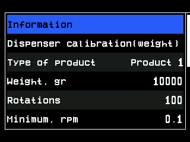

Le menu contextuel d'un moteur de doseur
Chaque élément du menu contextuel d'un moteur électrique de doseur — ce qu'il règle, à partir de quel niveau d'accès il est visible, et ce que « Reset to defaults » réinitialise réellement.
Sur l'écran Motors, maintenez « MENU », sélectionnez le moteur avec « UP » / « DOWN » et appuyez sur « MENU ». Ce que contient le menu dépend du niveau d'accès et du mode de semis du moteur.

| Élément | Niveau | Ce qu'il fait |
|---|---|---|
| « Information » (informations) | Agronomist | Ouvre l'écran d'état du moteur. |
| « Electric motors » (moteurs électriques) | Service | Ouvre l'écran de service des moteurs — voir L'écran Motors. |
| « Dispenser calibration(weight) » (étalonnage du doseur au poids) | Operator | Lance l'étalonnage au poids. Affiché seulement machine à l'arrêt. |
| « Type of product » (type de produit) | Agronomist | Lequel des trois produits le moteur applique — Affecter un produit à un moteur. |
| « Weight, gr » (poids, g) et « Rotations » (rotations) | Agronomist | Ensemble, ils décrivent le doseur : ce poids de produit pour ce nombre de tours d'arbre. Réglés par l'étalonnage ; ne les modifiez à la main que pour recopier les valeurs d'un doseur identique. |
| « Minimum, rpm » (minimum, tr/min), « Maximum, rpm » (maximum, tr/min) | Agronomist | Les vitesses d'arbre admises. Le panneau en déduit les vitesses d'avancement auxquelles la dose peut être appliquée. Le minimum ne peut pas atteindre le maximum : le panneau déplace l'autre valeur d'un pas. |
| « Button input » (entrée bouton), « Activation signal » (signal d'activation) | Agronomist | Un bouton-poussoir sur le contrôleur de moteur pour faire tourner le moteur depuis la machine pendant l'étalonnage. Avec « Button input » sur « No » (non), l'étalonnage se fait depuis le panneau seul. |
| « Holes in disk » (trous dans le disque) | Operator | Le nombre d'alvéoles du disque à graines ; le panneau en déduit la vitesse du disque. Seulement en mode « Precise » (précis). |
| « Numerator » (numérateur), « Denominator » (dénominateur) | Agronomist | Le rapport de transmission entre le moteur et l'arbre entraîné, tel que le constructeur de la machine l'a réglé. Ne le modifiez qu'après une transformation de l'entraînement. |
| « Rotation direction » (sens de rotation) | Agronomist | « Forward » (avant) ou « Backward » (arrière), selon le montage du moteur. |
| « Rollback when jammed » (retour arrière en cas de blocage) | Agronomist | « Yes » (oui) : lorsque le doseur se bloque, le moteur recule brièvement pour le libérer. « No » : le moteur est seulement arrêté. |
| « Reset to defaults » (réinitialiser aux valeurs par défaut) | Service | Réinitialise les réglages propres de ce moteur — voir l'avertissement ci-dessous. |
Les autres éléments du niveau Service sont des outils du technicien de service et ne sont pas décrits ici.
Éléments de poids seulement en « Flow » et « Hybrid ». « Dispenser calibration(weight) », « Type of product », « Weight, gr », « Rotations », les limites de vitesse et les éléments de bouton n'apparaissent que si le moteur fonctionne en « Flow » (débit) ou « Hybrid » (hybride). En « Precise », la dose vient des capteurs de graines, il n'y a rien à étalonner au poids, et « Holes in disk » apparaît à la place.
La mise du moteur sous ou hors surveillance ne se trouve pas dans ce menu : ce sont « PLUS » et « MINUS » sur l'écran Motors qui la commandent.
Votre machine fait quelque chose que cette page n'explique pas ? Écrivez à support@agriwelt.com — un ingénieur vous répond.